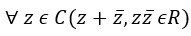
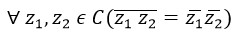
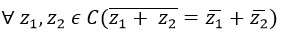
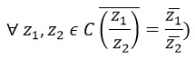

модуль комплексного числа
Введем понятие модуля комплексного числа.
Определение 1.5. Модулем комплексного числа a + bi (a, b ∈ R) называется арифметический квадратный корень из числа a 2 + b 2, т.е. число (a 2 + b 2) ½. Модуль комплексного числа z = a + bi обозначается через | z | или | a + bi |. Таким образом, согласно определению, | z | 2 = a 2 + b 2.
Теорема 1.3. Для любых комплексных чисел z и u
1) | z |2 = z · z ;
2) | z | = 0 тогда и только тогда, когда z = 0;
3) | zu | = z | · | u |;
4) | z -1 | = | z | -1 при z ≠ 0;
5) | z + u | ≤ | z | + | u |;
6) | z | - | u | ≤ | z + u |;
7) | | z | - | u | | ≤ | z + u |.
Доказательство.
1. Если z = a + bi, то z = a - bi и
z · z = a 2 + b 2 = | z | 2.
2. Если | z | = | a + bi | = 0, то | z | 2 = a 2 + b 2 = 0.
Так как a и b ‑ действительные числа, то из a 2 + b 2 = 0
следует a = b = 0, т.е. z = 0.
3. В силу 1 равенства из теоремы 1.3, | zu | 2 = (zu)(zu ) =
(z z)(u u) = | z | 2 | u 2
= ( | z | · | u |)2. Из равенства | zu | 2 = (| z | · | u |) 2
следует формула | zu | = | z | · | u |.
4. Согласно уравнению 3 из теоремы 1.3, при z ≠ 0 получим | z · z -1 | =
| z · | z -1 = 1. Следовательно, | z + u | ≤ | z | + | u |.
5. На основании равенства 1 из теоремы 1.3 имеем | z + 1 | 2 = (z + 1) · ( z + 1) =
| z | 2 + z + z + 1. Кроме того, если z = a + bi,
то z + z = 2a ≤ 2(a 2 + b 2) ½ = 2 | z |.
Поэтому | z + 1 | 2 ≤ (| z | + 1) 2, следовательно, | z + 1 | ≤ | z | + 1.
На основании формулы 3 из теоремы 1.3 и последнего неравенства заключаем, что при u ≠ 0 имеем
| z + u | = | u(zu -1 + 1)| = | u || zu -1 + 1 | ≤ | u |(|zu -1 | + 1) =
| u |(| z || u -1 + 1 ).Следовательно, | z + u | ≤ | z | + | u.
6. Так как z = -u + (z + u) и | -u | = | u |, то в силу неравенства 5 из теоремы 1.3,
| z | ≤ | -u | + | z + u | = | u | + | z + u |. Следовательно,
| z | - | u | ≤ | z + u |.
7. Поскольку число | | z | - | u | | равно | z | - | u | или | u | - | z |, то неравенство 7
следует из неравенства 6 из теоремы 1.3.
сопряженные комплексные числа
Определение. Комплексные числа z 1 и z 2, заданные в алгебраической форме, называются сопряженными, если они отличаются только знаком перед мнимой частью.
Число, сопряженное числу z, будем обозначать через z. Таким образом, если z = а + bi, то z = а - bi.
Приведем некоторые свойства сопряженных чисел:
1), т.е. сумма и произведение сопряженных чисел есть действительное числа.
2), т.е. число, сопряженное с произведением, равно произведению чисел, сопряженных с сомножителями.
3), т.е. число, сопряженное с суммой, равно сумме чисел, сопряженных со слагаемыми.
4), т.е. число, сопряженное с частным, равно частному чисел сопряженных с делимым и делителем.
(с 2 + d 2 ≠ 0).